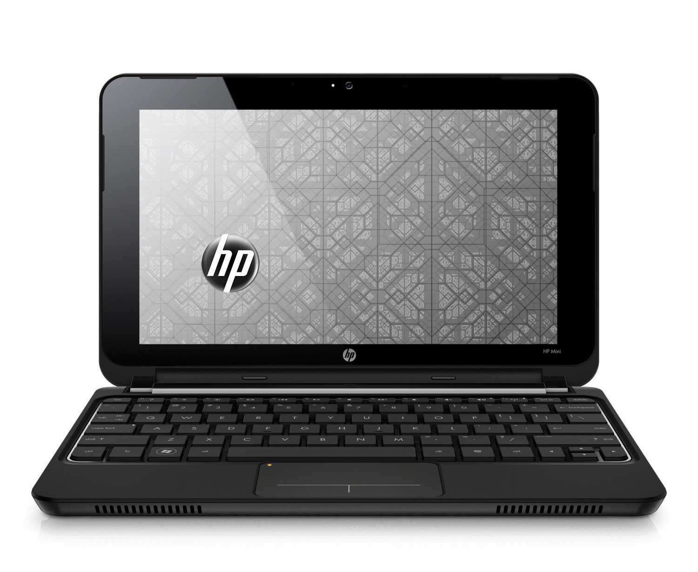
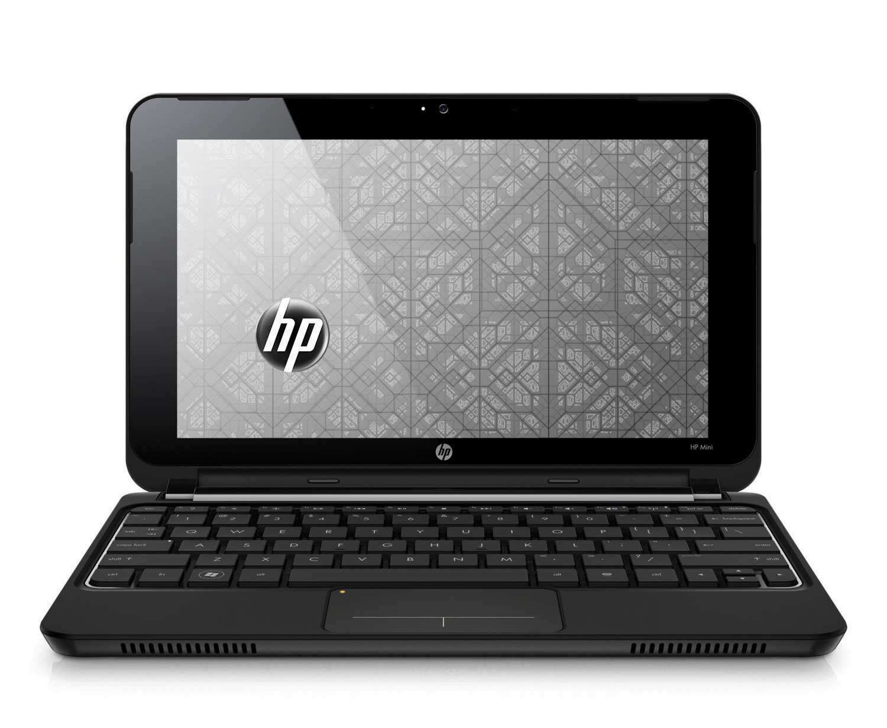

Una computadora es un dispositivo informático que es capaz de recibir, almacenar y procesar información de
una forma útil.
La computadora es parte de un sistema de computación.
Un computador de programa almacenado es el que almacena las instrucciones del programa en la memoria
electrónica.
Memoria primaria (MP), memoria principal, memoria central o memoria interna es la memoria de la computadora
donde se almacenan temporalmente tanto los datos como los programas que la unidad central de procesamiento
(CPU) está procesando o va a procesar en un determinado momento.
El modelo de Von Neumann también conocido como Arquitectura Von Neumann o arquitectura Princeton es, como su
nombre lo indica, una arquitectura de computadoras, es decir un modelo conceptual que muestra cómo funciona
una computadora (Máquina electrónica digital programable para el tratamiento automático de la
 
